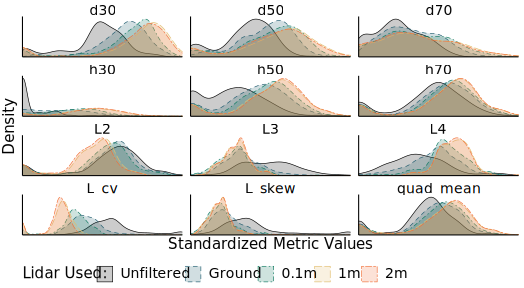

Filtering ground noise from LiDAR returns produces inferior models of forest aboveground biomass
Read the paper!
See the poster!
Airborne LiDAR has become an essential data source for large-scale, high-resolution modeling of forest biomass and carbon stocks, enabling predictions with much higher resolution and accuracy than can be achieved using optical imagery alone. Ground noise filtering – that is, excluding returns from LiDAR point clouds based on simple height thresholds – is a common practice meant to improve the ‘signal’ content of LiDAR returns by preventing ground returns from masking useful information about tree size and condition contained within canopy returns. Although this procedure originated in LiDAR-based estimation of mean tree and canopy height, ground noise filtering has remained prevalent in LiDAR pre-processing, even as modelers have shifted focus to forest aboveground biomass (AGB) and related characteristics for which ground returns may actually contain useful information about stand density and openness. In particular, ground returns may be helpful for making accurate biomass predictions in heterogeneous landscapes that include a patchy mosaic of vegetation heights and land cover types.
In this paper, we applied several ground noise filtering thresholds while mapping two study areas in New York (USA), one a forest-dominated area and the other a mixed-use landscape. We observed that removing ground noise via any height threshold systematically biases many of the LiDAR-derived variables used in AGB modeling. By fitting random forest models to each of these predictor sets, we found that that ground noise filtering yields models of forest AGB with lower accuracy than models trained using predictors derived from unfiltered point clouds. The relative inferiority of AGB models based on filtered LiDAR returns was much greater for the mixed land-cover study area than for the contiguously forested study area. Our results suggest that ground filtering should be avoided when mapping biomass, particularly when mapping heterogeneous and highly patchy landscapes, as ground returns are more likely to represent useful ‘signal’ than extraneous ‘noise’ in these cases.
Figure 1: Distributions of common LiDAR-derived metrics (including density percentiles, decile heights, L-moments, and quadratic mean height) for the pooled dataset at various levels of ground noise filtering. Filtering reduces the variance in many metrics, reducing the total amount of information available to models.

Figure 2: Height threshold-based filtering of LiDAR returns produces inferior models across all landscape types, with more notable impacts in mixed-use landscapes